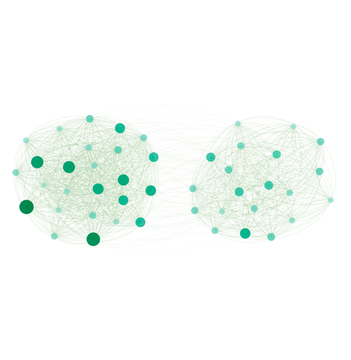
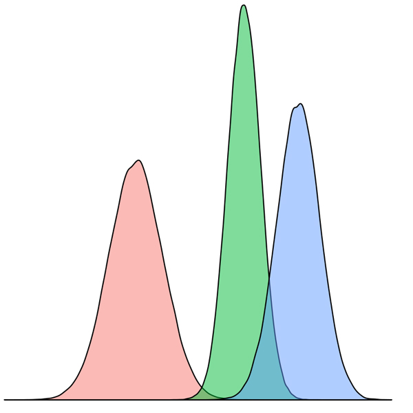
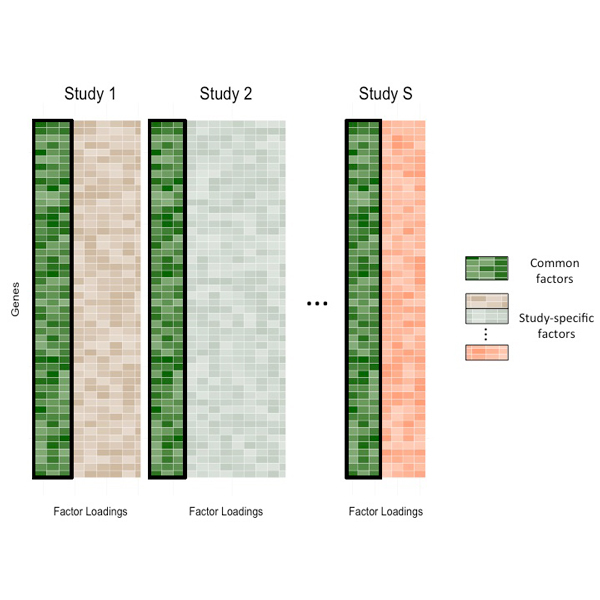

About Me
Hi! Welcome to my webpage. I am Zhuodiao(Hwei) Kuang, Master Student at Columbia University Mailman School of Public Health in the department of Biostatistics. Previously, I was an undergraduate at Renmin University of China in the Department of Statistics, advised by Yifan Sun.


Research
The focus of my research is to develop statistical modeling for the analysis of big and high-throughput data, such as epidemiological and genomic data analysis. In this big picture, I use transfer learning techniques to investigate biological issues, such as cancer, and depression.
My research interests are:

Transfer Learning

Bayesian Analysis

High Dimensional Data

Kernel Knockoff Selection
Currently I am working in the following applications:
•Federated and Transfer Learning
•Kernel Knockoff Selection